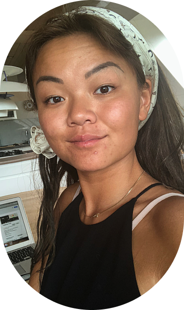

WELCOME
To my journal

En ny begyndelse:
De fleste kender mig mest som TikTok_Maii, hvor jeg bruger de fleste af mine vågne timer. Jeg
havde ikke i min vildeste
fantasi, forstillet mig at jeg ville læse til “kodning”...
Men her er jeg så, godt igang
med af afslutte 1. semester.
“Mange har spurgt”, hvad filan jeg egentlig laver på mit studie...Jeg har derfor lavet en
hjemmeside, hvor jeg vil vise
hvad jeg har lavet de sidste 4 måneder.
Velkommen til!
// Mai